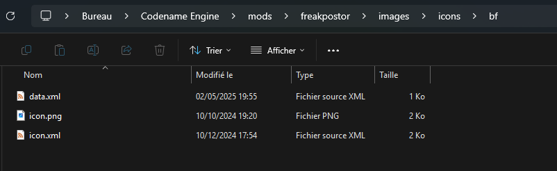

Making Custom Icons
To start making your icon you need to see whenever it is animated or not
Note: If your icon doesn't need to be scaled nor flipped nor be antialiased nor to be animated you can just put your icon direcly in to ./images/icons/ and just named iconName.png (Replace it with your actual icon name btw)
And if you followed that note you dont need to read the rest since it needs and icon data which the old format doesnt have :P
Make a folder in ./images/icons with the name of your icon and place it the png (and the xml if its animated) and then create a file named data.xml if you don't need to change specifications about the icon like default scale, facing direction and antialiasing.
Important note: The xml for the animated icon you be named icon.xml and the png should be named icon.png both these files should be your icon name folder alonside the data if you have/need one
If the icon is not animated
<!DOCTYPE codename-engine-icon>
<icon scale="1" facing="left" antialiasing="true" />
And for animated icons this is going to be different because every animated icon is different
<!DOCTYPE codename-engine-icon>
<icon scale="3" facing="left" antialiasing="false" offsetX="0" offsetY="0">
<!-- adds an animation for type neutral with the anim idle0 with an y offset of -15 and not moving with fps=0 -->
<anim name="neutral" anim="idle0" looped="false" offsetY="-15" fps="0"/>
<!-- adds a transition from neutral to winning with a fps value of 10 fps and y offset of -15 -->
<transition from="neutral" to="winning" anim="confirm0" fps="10" offsetY="-15"/>
<!-- this sets the percentage from 0 to the next step (added later) to be specified as a neutral type -->
<step percent="0" type="neutral"/>
<!-- doing the same as before but for winning -->
<anim name="winning" anim="confirm-hold0" looped="false" offsetY="-15" fps="0"/>
<transition from="winning" to="neutral" anim="unconfirm0" fps="10" offsetY="-15"/>
<!-- with this added in combination of the previous step node will make the icon go to its winning state at 80% of health and go back to neutral below that -->
<step percent="80" type="winning"/>
</icon>
If you did it correctly you should have a icon folder looking like this

If you need an example of a icon with an animated transition between winning and neutral you can download the example here
Structure
<icon antialiasing="true"/>
or
<icon antialiasing="true">
<!-- Icon Nodes Here -->
</icon>
Optional Parameters:
offsetXpretty self explanatoryoffsetYalso pretty self explanatoryscalei think you get it nowfacingthe direction the icon should face. (can beleftorright)antialiasingIf false makes the icon look sharper (can betrueorfalse)
<transition anim="idle0" from="winning" to="losing" />
Required parameters:
animwhich is the name of the animation in the spritesheet xml/atlas symbol name.fromwhich is the name of the state you are going from (default possible values: "winning", "neutral", "losing" (new ones can be created using the<step>node)).towhich is the name of the state you are going to (default possible values: "winning", "neutral", "losing" (new ones can be created using the<step>node)).
Optional Parameters:
offsetXpretty self explanatoryoffsetYalso pretty self explanatoryfpsframerate of which the animation plays at (defaults to 24)
<anim anim="idle0" name="winning" />
Required parameters:
animwhich is the name of the animation in the spritesheet xml/atlas symbol name.namewhich is the name of the current state of the icon (default possible values: "winning", "neutral", "losing" (new ones can be created using the<step>node)).
Optional Parameters:
offsetXpretty self explanatoryoffsetYalso pretty self explanatoryfpsframerate of which the animation plays at (defaults to 24)loopedwhenever or not the animation is looped (defaults to true)
<step percent="80" name="winning" />
Required parameters:
percentwhich is the name of the animation in the spritesheet xml/atlas symbol name.namestate of the icon to be set (default possible values: "winning", "neutral", "losing", or basically anything since you are making a custom step).